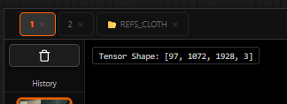

Channels & Exposure
The viewer's exposure and channel controls let you inspect image data the way a VFX artist would — adjusting brightness non-destructively and isolating individual colour channels to spot artefacts, clipping, or bias.

The exposure bar centred at the top of the viewport — slider, EV readout, and channel dropdown.
Exposure Control
The exposure slider sits in a semi-transparent bar near the top of the
viewport. It ranges from −4 EV to +4 EV
and adjusts display brightness using a CSS brightness() filter —
the underlying image data is never modified.
This is equivalent to adjusting the camera exposure in a colour grading tool. Use it to:
- Check for clipped highlights by pushing exposure up and looking for blown-out white patches.
- Inspect shadow detail by boosting exposure to see into dark areas.
- Confirm that near-black regions carry actual data (and aren't just crushed blacks).
Using the Slider
Drag the slider knob or click on the track to set an EV value.
The readout on the right updates in real time (e.g. +1.5 EV).
Interactive E-Drag
For a hands-free workflow, hold E while dragging the mouse horizontally anywhere over the viewer to scrub exposure interactively. Release E to lock the value in place.
Resetting Exposure
Right-click the exposure control (slider or label) to instantly reset to 0.0 EV.
Exposure range: −4 EV (dark) to +4 EV (bright). Right-click to reset to 0.
Channel Isolation
The channel selector dropdown (to the right of the EV readout) switches the viewport between four display modes. Channels are extracted using CSS SVG matrix filters — non-destructive and instant.
| Mode | Keyboard | What you see |
|---|---|---|
| RGB | Press R / G / B a second time to return | Full colour composite (normal display) |
| R — Red | R | Red channel rendered as greyscale — brighter = more red |
| G — Green | G | Green channel rendered as greyscale — brighter = more green |
| B — Blue | B | Blue channel rendered as greyscale — brighter = more blue |
Channel isolation modes — R, G, B each rendered as a greyscale luminance image.
Practical Inspection Workflows
Checking for Colour Bias
Switch to R, G, B in turn and look for areas that are brighter than expected in one channel. An overall green cast, for example, will show the G channel uniformly lighter than R and B.
Verifying Alpha / Mask Data
If you pass a grayscale mask tensor to the viewer (shape [1, H, W, 1]
or [1, H, W]), the viewer detects it and converts it to a
displayable format. Use channel isolation to confirm mask coverage is correct.
Detecting Highlight Clipping
- Drag exposure to +2 EV or higher.
- Look for areas that become pure white — these are already clipped at 1.0 in the source.
- If you see extensive pure-white patches at +2 EV, your sampler may be over-saturating highlights.